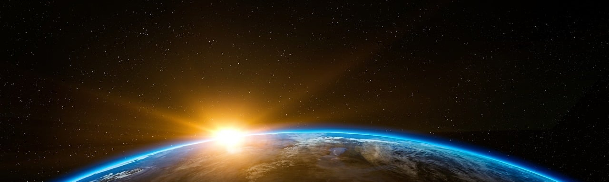
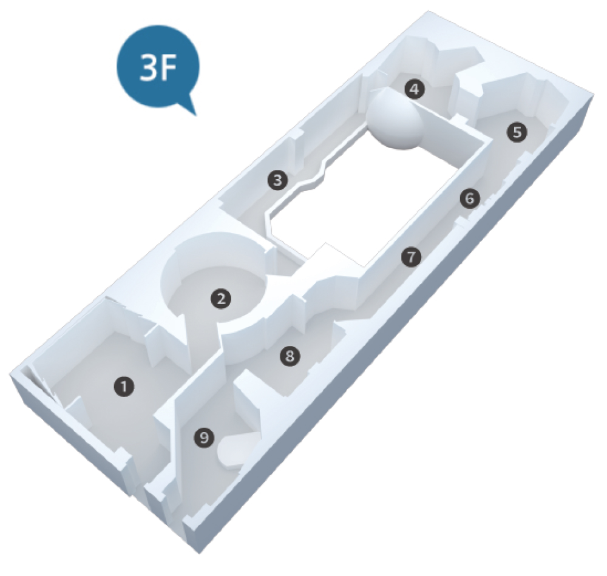
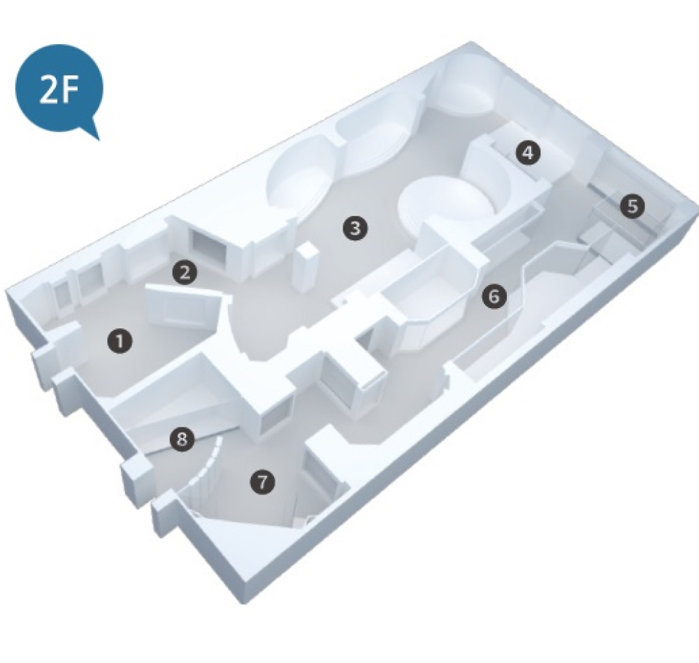
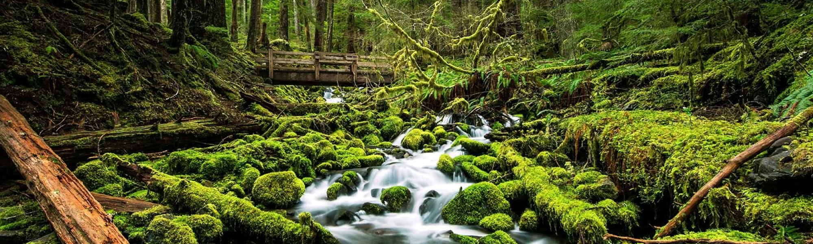
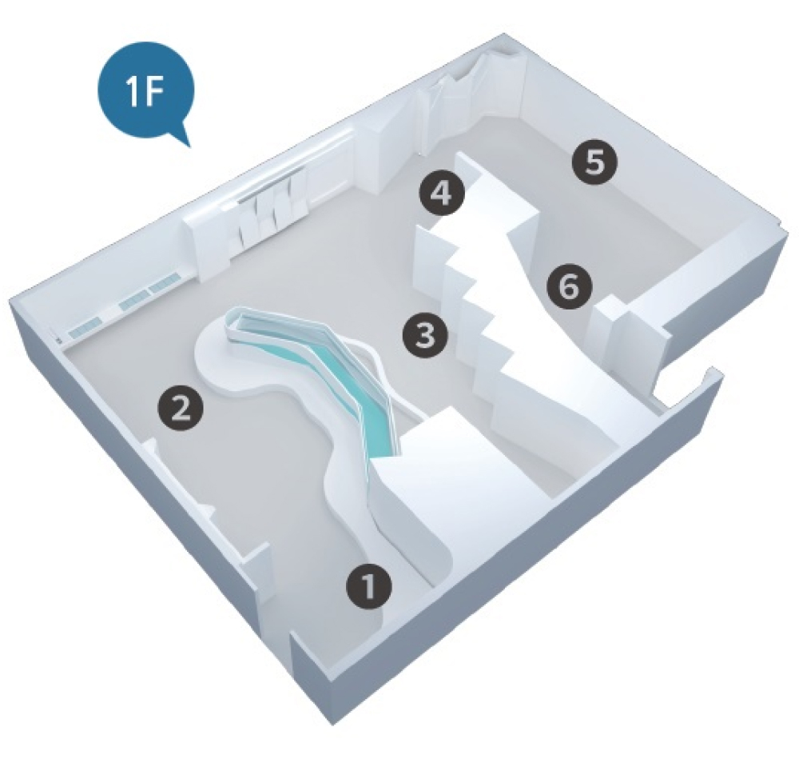
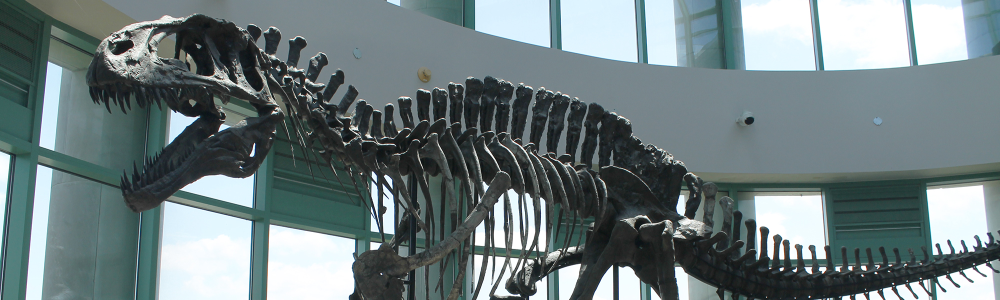
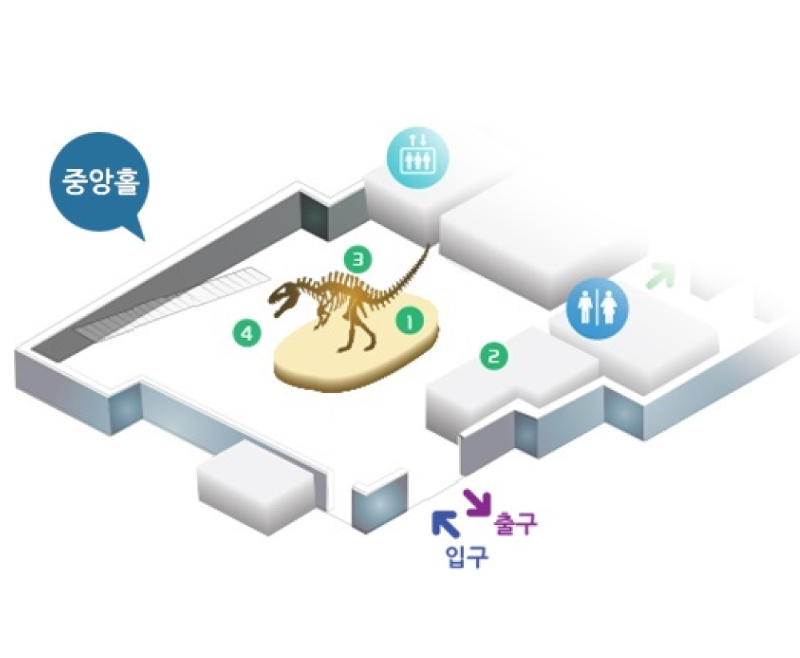

home > 전시관소개 > 상설전시
상설전시

-
- 색션소개
- 우리나라는 언제 만들어진 것일까요? 옛날에도 지금과 같은 모습이 었을까요? 한반도 자연사 기행 코너에서는 이 질문의 답을 드립니다. 시대에 따른 해수면 변화를 보여줌으로써 우리나라의 형태가 어떻게 변화해왔는가를 보여주고, 자연사기행에서는 제주도를 비롯한 우리 나라의 가볼만한 지질학적 명소 10곳을소개합니다. 그 지역의 대표 적인 암석을 만져보실 수도 있고, 영상물을 통해 자세한 소개도 받으 실 수 있습니다. 또한 우리나라의 자원광물, 화석 등 우리나라 자연의 역사를 보여주는 곳입니다.
지구환경관
우주는 우리의 무한한 탐험이자 미지의 영역입니다. 우주 환경을 이해하고 보호하는 것은 우주 여행과 탐사의 미래에 중요한 역할을 합니다. 어떠한 작은 조치라도 우주 자원을 지속 가능하게 활용하고 우주 생태계를 보호하는 것은 모든 우주 탐험가와 지구인의 책임입니다.
-
- 01 우주의 시작
- 태초에 우주는 대폭발을 하였습니다. 그 후 우주공간에서 가스가 모여 구름모양을 이루고, 이 가스구름이 뭉쳐져 미행성체가 만들어지며 별이 만들어지게 되었습니다.
-
- 02 우주의 역사
- 태양계가 속해 있는 우리 은하의 크기는 지름 10만 광년, 중심 두께 3,000 광년이며 위에서 보면 바람개비 모양의 나선구조를 하고 있습니다.
-
- 03 태양계
- 구름다리를 따라 걸으면서 태양과 8개의 행성의 특성을 알아보고, 입체적으로 제작된 달의 모형, 수장룡인 엘라스모사우루스의 골격과 복원도를 한눈에 볼 수 있습니다.
-
- 04 역동하는 지구
- 역동하는 지구 코너에서는 사람이 다가가면 센서에 의해서 멀티비전이 작동하며 화산폭발이나 용암분출 등 지구 내에서 일어나는 여러 가지 역동적인 활동을 보실 수 있습니다.
-
- 05 지질현상
- 지구의 지각은 여러 개의 판으로 이루어져 있고, 이 판들이 이동하면서 멀어지거나 부딪히며 지질현상을 일으킵니다. 이러한 지질현상 중 가장 잘 알려진 것이 단층과 습곡일 것입니다.
-
- 06 동굴 속 탐험
- 이 코너에서는 우리나라에 있는 석회암동굴, 용암동굴, 해식동굴의 분포와 생성과정 뿐만 아니라 석회암동굴의 단면도 전시되어 있어 동굴의 구조와 동굴에서 살아가는 동물들도 알아볼 수 있습니다.
-
- 07 광물
- 지각은 암석으로 이루어져 있고, 암석은 광물들로 이루어져 있습니다. 광물과 암석코너에서는 다양한 종류의 광물과 암석을 체계적으로 관람할 수 있습니다.
-
- 08 암석
-
- 09 한반도 이야기
- 한반도 자연사 기행 코너에서는 이 질문의 답을 드립니다. 시대에 따른 해수면 변화를 보여줌으로써 우리나라의 형태가 어떻게 변화해왔는가를 보여줍니다

-
- 색션소개
- 생명이 언제 어떻게 지구상에 나타났는가? 이것은 모두가 알고자 하는 수수께끼일 뿐만 아니라 철학이나 신학의 과제이기도 한 매우 어려운 문제입니다. 오늘날 생 명의 기원에 관한 과학자들의 견해는 생물이 무생물에서 진화, 발전해 왔다는 것입니다. 40억 년 전 이미 지구상에는 바다와 대기가 있 었습니다. 과학자들은 무생물에서 생물이 진화되는 과정은 대략 그 무렵부터 시작되었다고 봅니다. 생물학적 진화 가 운데 비교적 그 역사가 잘 해명되어 있는 것은 6억 년 전 이후입니다.
생명진화관
환경을 보호하고 지구를 지키는 것은 모두의 책임입니다. 우리는 지속 가능한 삶을 위해 노력하고, 자연과 함께 공존할 수 있는 방법을 찾아야 합니다.
-
- 01 생명의 기원과 탄생
- 생명이 언제 어떻게 지구상에 나타났는가? 이것은 모두가 알고자 하는 수수께끼일 뿐만 아니라 철학이나 신학의 과제이기도 한 매우 어려운 문제입니다.
-
- 02 고생대, 생명진화의 출발
- 약 30억 년 전의 초기 생물체는 간단한 세포로 이루어진 박테리아 같은 것이었습니다.
-
- 03 중생대, 공룡의 세계
- 중생대는 2억 4500만 년 전부터 6500만 년 전까지의 시기로, 약 1억 8000만년간 지속되었습니다. 고생대 말에 출현한 원시적인 파충류는 중생대에 들어와서 급격히 분화, 발전했습니다.
-
- 04 신생대, 포유류의 전성기
- 중생대의 육지와 바다 및 공중을 지배한 공룡·어룡 ·익룡은 백악기 말에 절멸되어 신생대 초기 생태계에 큰 공백이 생긴 뒤, 포유류는 이를 이용하여 매우 빠른 속도로 진화하였습니다.
-
- 05 해양포유류
- 현재의 고래는 바다에 살았던 생물이 육상으로 진출하여 진화하여 적응했다가 다시 육상에서 바다생활에 적합하도록 진화한 것입니다. 크게 고래류, 기각류, 바다소류로 나눌 수 있는 다양한 해양포유류의 특징과 생태를 살펴 볼 수 있습니다.
-
- 06 육상생물의 다양성
-
- 07 해양생물의 다양성
- 가장 단순한 다세포생물인 해면동물부터 척추동물인 어류까지 바다에서 우리가 쉽게 볼 수 있는 다양한 해양생물을 전시하고 있습니다.
-
- 08 한국의 상어
- 상어는 지느러미가 있고 아가미로 숨을 쉬지만 일반적인 물고기와 다르게 몸의 뼈가 사람의 코와 귀의 물렁뼈와 같은 연골로 이루어진 연골어류입니다.


-
- 색션소개
- 서대문 자연사 박물관은 자연과 인간의 흥미로운 상호작용을 탐구하는 곳으로, 다양한 주제를 다루는 풍부한 전시물이 특징입니다. 박물관은 인간의 진화와 기원, 환경 보전과 지속가능성, 문화와 자연의 상호작용, 그리고 과학과 기술의 발전 등 다양한 측면을 다룹니다. 관람객은 자연과 인간의 역동적인 관계를 깊이 이해하고, 지구 환경 문제에 대 한 인식을 높일 수 있습니다. 또한, 예술과 문화를 통한 자연의 표현과 과 학적 연구의 현대적인 발전 사례들을 통해 새로운 시각 을 확장하며, 박물관은 교육적이고 인상적인 경험을 제공합니다.
인간과 자연관
자연과 인간은 상호 의존적인 관계에 있습니다. 우리는 자연의 일부이며, 자연은 우리에게 필수적인 자원과 환경을 제공합니다. 그러나 동시에 우리의 행동이 자연에 미치는 영향도 큽니다.
-
- 01 생태계
- 생태계는 특정 지역이나 환경에서 서로 상호작용하는 생물군집과 그들의 비생물적 환경 요소들로 이루어진 시스템입니다. 이는 생물다양성과 생물학적 상호작용의 네트워크로 구성되어 있으습니다
-
- 02 생산자
- 생산자는 생태계에서 태양 에너지를 이용하여 유기물을 생산하는 생물입니다. 대표적으로 식물이 생산자 역할을 합니다. 광합성을 통해 이들은 이산화탄소와 물을 이용하여 산소를 방출하고, 유기물을 생성합니다.
-
- 03 소비자
- 소비자는 생태계에서 다른 생물을 먹어 에너지를 얻는 중요한 역할을 합니다. 이들은 식물이나 다른 동물을 먹어 성장하고 생존하며, 생태계의 구조와 안정성을 유지합니다.
-
- 04 분해자
- 분해자는 생태계에서 유기물을 분해하여 무기물로 되돌리는 생물입니다. 이들은 죽은 동물과 식물, 배설물 등을 해체하고 분해하여 영양소를 방출하며, 이를 다른 생물들이 이용할 수 있는 형태로 만듭니다.
-
- 05 기후변화
- 기후변화는 지구의 기후 패턴이 변화하는 현상을 의미합니다. 이 변화는 대기 중 온실가스 농도 증가와 함께 인간 활동에 의해 가속화되고 있습니다.
-
- 06 멸종위기종
- 멸종위기종은 생물종이 존속이 위협받는 상태를 나타냅니다. 주요 원인으로는 서식지 파괴, 기후변화, 포획 및 불법무역 등이 있습니다. 이들 종이 멸종하게 되면 생태계에 치명적인 영향을 미칠 수 있습니다. 따라서 보호와 보전 노력이 필요하며, 국제적인 협력이 필수적입니다.


-
- 색션소개
- 전기백악기(1억1500만년~1억500만년전)에 생존했던 아크로칸토사우루스(Acrocanthosaurus)는 몸길이 9~12m, 몸무게 2~4t에 달하며 알로사우루스과에 속하는 무서운 육식공룡으로서, 거대한 용각류 공룡도 죽일 수 있을 정도로 사납고 썩은 고기를 먹기도 했습니다. 머리뼈의 길이가 1. 4m나 되며 턱이 튼튼하여 물어뜯는 힘이 대단했을 것으로 추측됩니다. 가장 큰 특징은 목뼈에서 꼬리뼈까지 발달한 톱니 같은 긴 돌기입니다. 이 돌기는 목과 꼬리의 강한 근육을 지탱하는 역할과 함께 체온을 조절하는 기능을 했을 것으로 추정됩니다.
중앙홀
아크로칸토사우루스는 공룡의 한 종류로, 전종의 육식 공룡으로 분류됩니다. 이 공룡은 삼각형 모양의 큰 등껍질과 뾰족한 가시가 특징입니다. 대부분의 아크로칸토사우루스는 다리가 강력하고 길어 빠르게 이동할 수 있는 능력을 갖추고 있었을 것으로 추정됩니다.
-
- 01 아크로칸토사우루스
- 전기백악기(1억1500만년~1억500만년전)에 생존했던 아크로칸토사우루스(Acrocanthosaurus)는 몸길이 9~12m, 몸무게 2~4t에 달하며 알로사우루스과에 속하는 무서운 육식공룡입니다
-
- 02 향고래
- 향고래(Sperm Whale)는 두뇌의 무게가 약 8kg(사람의 5배)에 달하는 포유동물입니다. 모계사회로 암컷과 어린 새끼들은 무리를 지어 생활하고 다 자란 수컷은 단독생활을 하는 경우가 많습니다.
-
- 03 프테라노돈
- “날개는 있으나 이빨이 없다”는 이름의 프테라노돈은 백악기 후기에 살았던 날아다니는 파충류였습니다. 6m가 넘는 날개를 가졌던 프테라노돈은 물고기, 연체동물, 게, 곤충, 죽은 동물 등을 먹었습니다.
-
- 04 투푹수아라
- 투푹수아라는 하늘을 나는 파충류인 익룡 중 하나입니다. 트라이아스기 후기에서부터 백악기가 끝날 때까지 (2억 2800만년 ~ 6600만년 전) 생존했던 익룡은 척추동물 중 가장 먼저 날아다닐 수 있게 진화되 었습니다.
